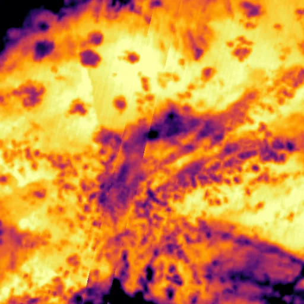

Benchmark / Near-lossless / l8-tirs-2 / l8-tirs-2-13
l8-tirs-2-13
bahama-bank · 2023-11-29 · sample details

Metadata
| id | l8-tirs-2-13 |
|---|---|
| source | LANDSAT/LC08/C02/T1 (Landsat Collection 2 Level-1) |
| asset | LANDSAT/LC08/C02/T1/LC08_013043_20231129 |
| crs | EPSG:32618 |
| transform | 237765.0 30.0 0.0 2664525.0 0.0 -30.0 |
| datetime_start | 2023-11-29T15:38:17.448Z |
| datetime_end | 2023-11-29T15:38:17.448Z |
| bands | B10|B11 |
| shape | 2x512x512 |
| dtype | uint16 |
| unit | DN |
| scale | 1 |
| offset | 0 |
| nodata | 0 |
| input_sha256 | 58b00a0de3c7d52f993922cabc4ef148dd5be1d5bc016e41fe12ac46e309fafd |
| site | bahama-bank |
| regime | water |
| lon | -77.502 |
| lat | 24.003 |
| spacecraft | LANDSAT_8 |
| sensor | OLI_TIRS |
| product_id | LC08_L1TP_013043_20231129_20231209_02_T1 |
| wrs_path | 13 |
| wrs_row | 43 |
| acquired_m | 100 |